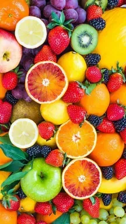
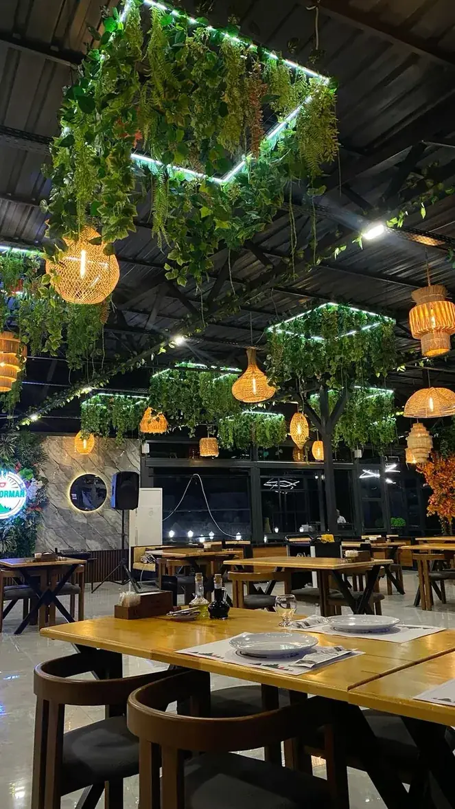
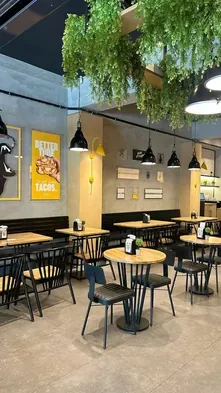
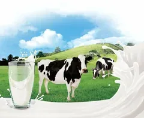
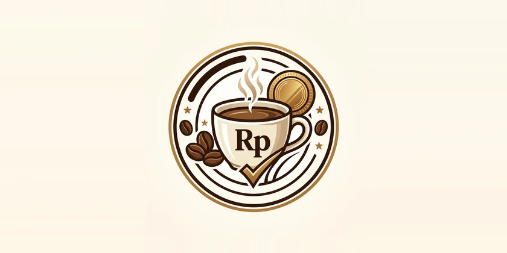
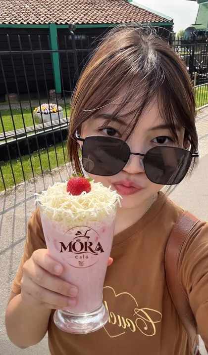

Bahan selalu segar
Kami hanya menggunakan buah dan racikan pilihan yang diproses higienis untuk menjaga kemurnian aroma serta nutrisinya.
Tempat di mana aroma kopi pilihan bertemu racikan buah segar dan krim keju lembut. Ciptakan momen berharga dalam setiap cangkir penuh kehangatan.
MŌRA Caféé, hadir sejak 2014. Cita rasa sejati.

Berawal dari kecintaan kami pada aroma kopi Nusantara dan eksplorasi minuman segar yang ramah di lidah, MŌRA Caféé hadir sebagai ruang singgah yang menenangkan di tengah aktivitas keseharian.
Setiap resep dikurasi secara teliti menggunakan biji kopi terpercaya, susu murni berkualitas tinggi, dan buah-buahan segar alami. Bagi kami, segelas minuman bukan sekadar pelepas dahaga, melainkan teman berbagi cerita dan menemukan inspirasi.
MŌRA mengutamakan bahan yang segar dan susu alami untuk menghasilkan minuman dengan rasa creamy, segar, dan konsistensi yang selalu terjaga.
Ragam minuman mulai dari buah tropis, cokelat premium, boba kenyal, hingga signature coffee untuk memenuhi setiap selera.
Standar kualitas premium dengan harga yang ramah bagi pelajar, mahasiswa, pekerja kantoran, maupun masyarakat luas.
MŌRA menggabungkan kualitas rasa, harga bersahabat, dan kenyamanan dalam satu pengalaman.MŌRA, lebih dari sekadar minuman.

Kami hanya menggunakan buah dan racikan pilihan yang diproses higienis untuk menjaga kemurnian aroma serta nutrisinya.

Pencahayaan hangat dan tata ruang ramah kerja, pas untuk nugas, WFC, maupun bercengkerama bersama kerabat.

Susu alami pilihan tanpa pemanis buatan berlebih, menghasilkan tekstur creamy lembut yang nyaman di lambung.

Kenikmatan minuman dengan harga yang sebanding kualitas, menjaga hari Anda tetap berenergi tanpa menguras dompet.
“MŌRA Caféé, segarnya terasa, nyamannya berkesan.”
Udah lama cari minuman yang beneran enak dan estetik buat konten, akhirnya ketemu MŌRA! Mango Cheese-nya creamy banget, mangganya kerasa asli. Wajib dikunjungi!
Strawberry Cheese MŌRA ini juaranya! Asem-manisnya pas, cheese cream-nya lumer, dan suasana cafenya bikin betah berlama-lama. Minuman favorit aku sekarang!

Baru pertama kali ke sini diajak teman, langsung jatuh cinta sama tempatnya yang cozy dan hangat. Ice Latte-nya smooth banget, pas buat nemenin WFH seharian!
MŌRA adalah tempat yang selalu aku rekomendasikan ke teman-teman. Minumannya berkualitas premium tapi harganya tetap masuk akal. Atmosfernya enak banget buat ngobrol santai.